수능(국어영역) (2013-07-12 기출문제)
1. 강의를 들은 학생이 <보기>의 면접 상황에서 고려할 사항을 정리한 내용으로 적절하지 않은 것은?(1번 공통지문 문제)
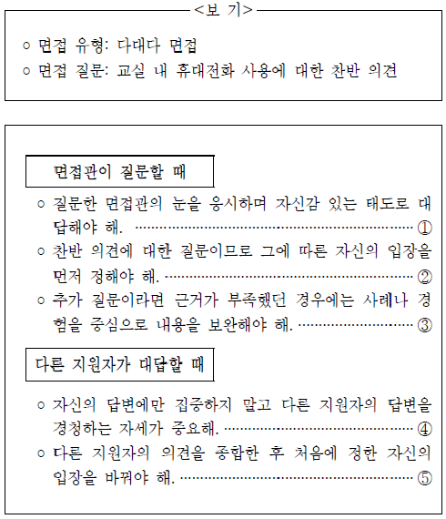
- ①
- ②
- ③
- ④
- ⑤
(정답률: 알수없음)

2. 다음은 학급 회의의 일부이다. 회의 참여자들의 말하기 방식에 대한 설명으로 적절하지 않은 것은?
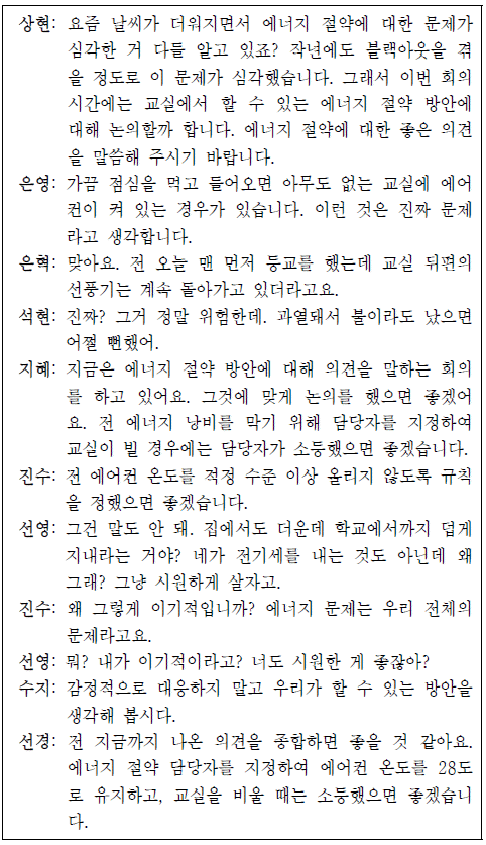
- 상현: 참여자의 적극적인 참여를 위해 화제의 필요성을 강조하며 회의를 시작하고 있다.
- 석현: 상대의 말에 동의하며 의사소통 상황에 맞게 의견을 개진하고 있다.
- 지혜: 잘못된 방향으로 흘러가는 화제를 조정하며 회의에 적극적으로 참여하고 있다.
- 수지: 다수가 참여하는 의사소통에서 참여자의 갈등을 중재하여 담화의 흐름을 돕고 있다.
- 선경: 다른 사람의 발언을 수용하며 회의의 목적 달성을 위해 협력하고 있다.
(정답률: 알수없음)
3. 위 대화에서 ‘선생님’이 사용한 의사소통 방법으로 적절하지 않은 것은?(4번 공통지문 문제)
- 영희의 비언어적 표현을 고려하며 듣는다.
- 질문을 하면서 영희가 대화에 참여하도록 이끈다.
- 칭찬을 하면서 영희가 말을 이어가도록 격려한다.
- 영희의 말하기 방식이 합리적인지 평가하며 듣는다.
- 영희의 말에 호응해 줌으로써 공감하며 듣고 있음을 보여준다.
(정답률: 알수없음)
4. <보기>를 읽고, 작문 상황을 고려하여 글을 작성하는 과제를 수행하고자 한다. 작성할 글의 내용을 <조건>에 따라 구상한다고 할 때, 가장 적절한 것은? [3점]
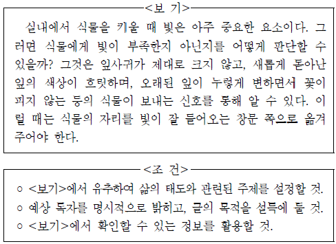
- 창문이 빛을 받을 수 있는 통로가 된다는 점을 활용하여, 방과 후 프로그램이 학생들의 특기와 적성을 살리는 통로 역할을 해야 함을 강조하는 글을 써야겠어.
- 빛이 부족하다고 신호를 보내는 식물을 창가 쪽으로 옮겨주는 점을 활용하여, 반 친구들에게 갑자기 말수가 적어지고 우울해진 친구를 위해 도움을 주자는 글을 써야겠어.
- 빛 가까이에 식물을 두어야 잘 자랄 수 있다는 점을 활용하여, 이웃과의 친밀감을 높이기 위해서 이웃과 자주 왕래하며 가까이 지내는 사람들에 대해 소개하는 글을 써야겠어.
- 일을 성공적으로 끝마치려면 사전 준비가 필수적이라는 점을 활용하여, 공부를 시작하는 사람들에게 사전에 계획을 세우지 않으면 실패하기 쉽다는 경각심을 주는 글을 써야겠어.
- 식물이 창문으로부터 멀어지면 식물의 상태가 나빠진다는 점을 활용하여, 식물을 처음 키우는 사람들에게 식물 키우기에 빛은 아주 중요한 요소라는 점을 알려주는 글을 써야겠어.
(정답률: 알수없음)
5. ‘영주’의 의견을 반영하여 쓴 글로 가장 적절한 것은?(7번 공통지문 문제)
- 온라인상에서 만나는 ‘너’는 가상의 존재입니다. 온라인을 벗어나 실제의 ‘너’를 만나고 싶습니다.
- 글 속에 아버지의 뒷모습, 친구의 고민이 들어 있습니다. 그들의 글을 읽지 말고, 그들의 말을 들어보세요. 지금 만나러가 볼까요?
- 내 글에 바로 댓글이 달립니다. 다양한 사람들이 내 이야기를 들어 주고 있었습니다. 직접 보지 않는데도 보입니다. 이런 게 진짜 친구 아닐까요?
- 친구의 블로그에는 친구의 소식이 있습니다. 친구와 직접 만나면, 친구의 속마음을 볼 수 있습니다. 친구의 속마음 대신 소식만 궁금해 하는 우리를 반성합시다.
- 친구는 많은데 친구가 없습니다. 바로 옆을 보면 진짜 친구를 만들 수 있습니다. 친구가 옆에 있는데 또 다른 친구들을 찾아 온라인상을 헤매고 있지는 않나요?
(정답률: 알수없음)
6. ㉠∼㉤을 고쳐 쓰기 위한 방안으로 적절하지 않은 것은?(9번 공통지문 문제)
- ㉠은 통일성을 깨뜨리는 문장이므로 삭제한다.
- ㉡은 단어의 선택이 적절하지 않으므로 ‘가르쳐’로 바꾼다.
- ㉢은 앞 문장과의 의미 관계를 고려하여 ‘그래서’로 바꾼다.
- ㉣은 글의 일관성을 위해 바로 앞 문장과 위치를 바꾼다.
- ㉤은 뒤에 나오는 단어와 의미가 중복되므로 삭제한다.
(정답률: 알수없음)
7. <보기 1>의 ⓐ, ⓑ의 밑줄 친 부분에 나타나는 음운 현상에 대한 설명을 <보기 2>에서 찾아 바르게 짝지은 것은? (순서대로 ⓐ, ⓑ) [3점]
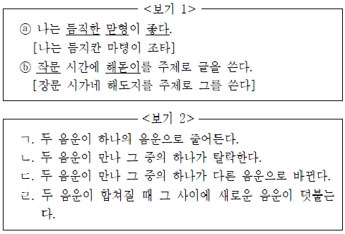
- ㄱ, ㄷ
- ㄱ, ㄹ
- ㄴ, ㄷ
- ㄴ, ㄹ
- ㄷ, ㄹ
(정답률: 알수없음)
8. 다음 자료를 통해 ‘부사어’에 대해 탐구한 내용으로 적절하지 않은 것은?
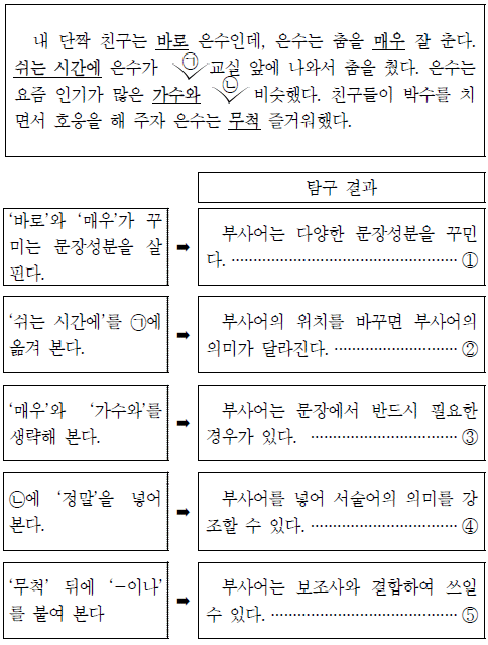
- ①
- ②
- ③
- ④
- ⑤
(정답률: 알수없음)
9. <보기>는 국어사전 편찬을 위하여 언어 자료를 정리한 내용의 일부이다. <보기>의 예를 바탕으로 <국어사전>의 ㉠에 추가할 뜻풀이로 적절한 것은? <보 기>
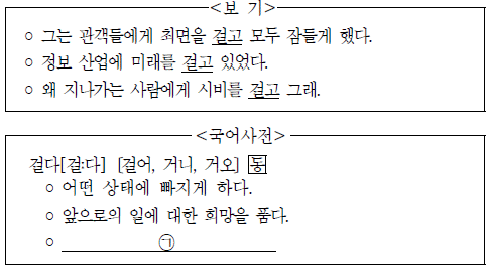
- 의논이나 토의의 대상으로 삼다.
- 상대편을 넘어뜨리려는 동작을 하다.
- 다른 사람이 관련이 있음을 주장하다.
- 명예나 목숨을 위해 희생할 각오를 하다.
- 다른 사람을 향해 먼저 어떤 행동을 하다.
(정답률: 알수없음)
10. 다음의 ㉠, ㉡에 들어갈 용례로 적절하지 않은 것은? [3점]
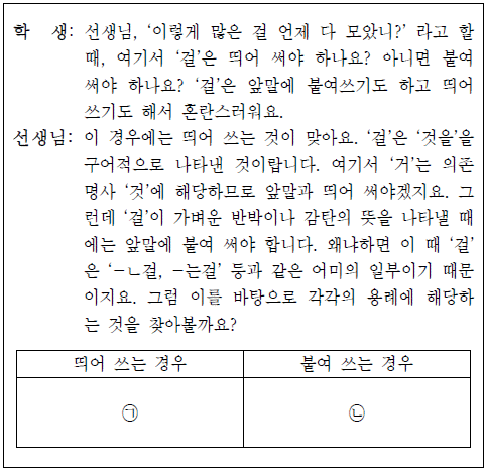
- ㉠: 몸에도 좋지 않은 걸 왜 먹니?
- ㉠: 내가 바라는 걸 너는 알고 있지?
- ㉡: 날이 흐린걸 보니 곧 비가 오겠네.
- ㉡: 그만하면 훌륭하던걸 뭐.
- ㉡: 야, 눈이 많이 쌓였는걸!
(정답률: 알수없음)
11. <보기>의 밑줄 친 부분의 사례에 해당하는 것은?
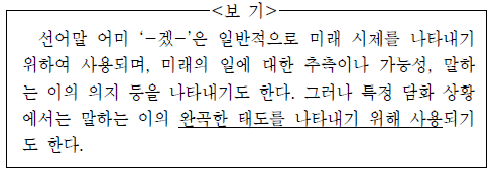
- 제가 잠시 들어가도 되겠습니까?
- 동생은 영화를 보러 가겠다고 한다.
- 지금 떠나면 저녁에야 도착하겠구나.
- 다음 달 정도면 날씨가 시원해지겠지?
- 이 정도의 고통은 내 힘으로 이겨내겠다.
(정답률: 알수없음)
12. ㉠∼㉢에 대한 설명으로 적절하지 않은 것은?(16번 공통지문 문제)
- ㉠은 충동을 억제하려는 자아의 강도에 의해 만족지연 능력이 형성된다고 본다.
- ㉡에서는 만족지연 행동을 인지적 능력과 연결 지어 설명한다.
- ㉢은 사회적 강화를 통해 만족지연 능력이 발달한다고 본다.
- ㉠과 ㉡은 충동적 행동의 억제를 문화적 측면에서 설명하고 있다.
- ㉡과 ㉢은 만족지연 행동으로 인한 보상의 가치를 고려한다.
(정답률: 알수없음)
13. 윗글을 읽은 학생이 <보기>의 실험 결과를 통해 이끌어낼 수 있는 결론으로 가장 적절한 것은? [3점](16번 공통지문 문제)
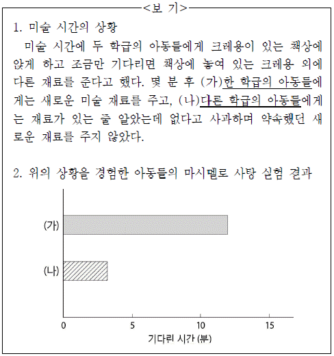
- 아동의 만족지연 능력은 인지적 발달에 영향을 준다.
- 아동은 또래의 행동을 관찰하여 만족지연 행동을 학습한다.
- 아동의 만족지연 행동은 욕구의 좌절을 경험할수록 강화된다.
- 지연된 보상의 실현을 경험한 사람은 그렇지 않은 사람에 비해 만족지연 행동이 강화된다.
- 아동이 외부의 조건 변화와 관계없이 스스로의 자아를 조절할 수 있을 때에만 만족지연 행동이 발생한다.
(정답률: 알수없음)
14. 다음은 휴대전화의 자기 유도 충전 방식을 그린 것이다. <보기>에서 적절한 것만을 있는 대로 고른 것은?(19번 공통지문 문제)
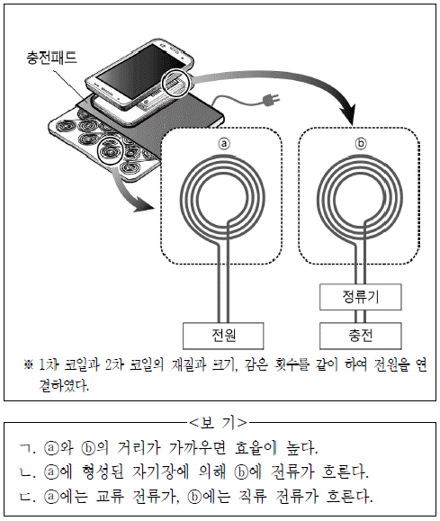
- ㄱ
- ㄴ
- ㄱ, ㄴ
- ㄴ, ㄷ
- ㄱ, ㄴ, ㄷ
(정답률: 알수없음)
15. ㉠과 ㉡에 대한 설명으로 적절하지 않은 것은?(19번 공통지문 문제)
- ㉠은 송신부와 수신부의 중심이 일치하면 전력 전송 효율이 높다.
- ㉡을 상용화하려면 코일을 소형화하는 과정이 필요하다.
- ㉠보다 ㉡이 먼 거리에 전력을 전송하는 데 유리하다.
- ㉡은 ㉠과 달리 유도전류를 활용하여 전력을 전송한다.
- ㉠과 ㉡ 모두 유선보다는 전력 전송 효율이 떨어진다.
(정답률: 알수없음)
16. ㉠과 ㉡에 대한 설명으로 적절하지 않은 것은?(22번 공통지문 문제)
- ㉠은 정부나 정부의 위탁을 받은 기관이 주택을 공급하는 제도이다.
- ㉡은 수요자의 자격 조건을 공정하게 판단할 수 있는 기준 마련이 중요하다.
- ㉠은 ㉡과 달리 적절한 공급 물량이 있을 때 기대하는 효과를 얻을 수 있다.
- ㉡은 ㉠과 달리 민간 주택 시장을 활용하여 주거 문제를 해결한다.
- ㉠과 ㉡은 모두 정부의 재정적 여건이 뒷받침되어야 한다.
(정답률: 알수없음)
17. 윗글을 바탕으로 <보기>에 드러난 문제 상황의 해결 방안을 추론한 결과로 적절하지 않은 것은? [3점](22번 공통지문 문제)
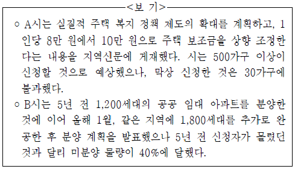
- A시는 주택 보조금이 수요자의 현실적 요구를 충분히 반영했는지 점검해 본다.
- A시는 수요자에게 주택 바우처 제도에 대해 충분히 정보를 제공했는지 점검해 본다.
- B시는 공공 임대 주택의 주거 환경에 문제점은 없는지 점검해 본다.
- B시는 제공하려던 주택 보조금이 적정하게 책정되었는지 점검해 본다.
- B시는 미분양 공공 임대 주택의 위치가 문화적으로 소외된 지역인지 점검해 본다.
(정답률: 알수없음)
18. 윗글을 발표 수업의 원고라 할 때, 발표 수업을 위한 계획으로 적절하지 않은 것은?(25번 공통지문 문제)
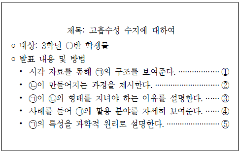
- ①
- ②
- ③
- ④
- ⑤
(정답률: 알수없음)
19. 윗글을 읽은 학생들의 반응으로 적절하지 않은 것은? [3점](25번 공통지문 문제)
- 장마철에 습기를 제거하려고 구입한 제습제에는 고흡수성 수지가 들어 있을 거야.
- 친수성 작용기를 포함한 고분자 물질을 선박의 표면에 바르면 부식을 방지할 수 있겠어.
- 아기들이 착용하는 기저귀에 고흡수성 수지를 사용하면 최적의 흡수력을 얻을 수 있겠어.
- 망상 구조가 단단하게 설계된 꽃꽂이용 밑판은 더 많은 수분을 꽃에 제공할 수 있을 거야.
- 물기 제거를 위한 청소용 스펀지는 중합 반응으로 만들어진 고분자 물질로 제작할 수 있겠어.
(정답률: 알수없음)
20. <보기>는 ⓐ와 관련된 설명이다. 사례로 든 두 단어의 관계가 ‘유의 관계’가 아닌 것은?(25번 공통지문 문제)
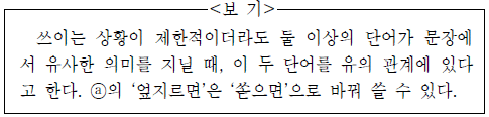
- 철수는 신호를 (보았다 / 지켰다).
- 영희는 철길을 (넘었다 / 건넜다).
- 형이 나에게 사과를 (주었다 / 건넸다).
- 나는 어젯밤에 전구를 (갈았다 / 바꿨다).
- 날씨가 더워서 찬물을 (먹었다 / 마셨다).
(정답률: 알수없음)
21. ㉠에 대한 조언으로 가장 적절한 것은?(29번 공통지문 문제)
- 독서의 목적에 맞게 읽으려면 특정 부분을 선별하여 재조직해야 해.
- 글의 내용을 정확하게 이해하려면 참고가 될 만한 다른 자료를 찾아봐야 해.
- 글의 숨겨진 의미를 파악하려면 자신의 경험과 문맥을 바탕으로 이해해야 해.
- 글의 주요 정보를 구조화하여 이해하려면 문장, 문단의 중심 내용을 파악해야 해.
- 글의 내용을 이해하려면 책의 내용에서 공감이 되는 부분과 비판할 부분을 가려내야 해.
(정답률: 알수없음)
22. 윗글을 다음과 같이 나타낼 때, ⓐ~ⓓ에 대한 설명으로 적절하지 않은 것은?(31번 공통지문 문제)
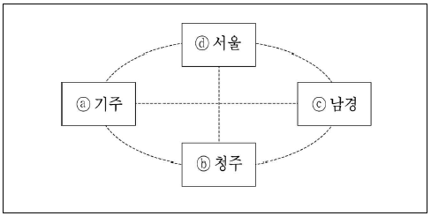
- ‘은하 낭자’는 ⓐ에서 백학선 때문에 ‘유 상서’에 의해 고난을 겪는다.
- ‘은하 낭자’는 ‘유 한림’을 찾으러 ⓑ로 가는 길에 ‘유 한림’을 만나지 못하는 좌절을 겪는다.
- ‘유 상서’는 ⓓ로 ‘전 현령’을 불러 ‘유 한림’의 혼사 문제를 의논한다.
- ‘유 한림’은 ‘은하 낭자’가 ‘유 상서’와 만나 ‘유 한림’의 행방을 물었음을 ⓓ에서 알게 된다.
- ‘유 한림’은 외숙인 ‘전 현령’의 말을 듣고 ⓓ에서 ⓒ로 떠날 결심을 한다.
(정답률: 알수없음)
23. [A]에 대한 설명으로 가장 적절한 것은?(31번 공통지문 문제)
- 상대방의 말을 듣고 사건의 진상을 파악한다.
- 증거물을 활용해 자신의 의견을 정당화한다.
- 남다른 관계를 강조하여 상대방을 질책한다.
- 권력자에 기대어 상대방을 설득한다.
- 정중한 표현으로 상대방을 회유한다.
(정답률: 알수없음)
24. <보기>의 빈 칸에 들어갈 한자성어로 적절한 것은?(31번 공통지문 문제)
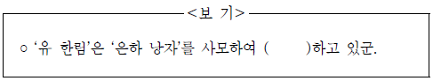
- 오매불망(寤寐不忘)
- 연목구어(緣木求魚)
- 결자해지(結者解之)
- 천석고황(泉石膏肓)
- 부화뇌동(附和雷同)
(정답률: 알수없음)
25. <보기>를 바탕으로 윗글을 이해한 내용 중, 적절하지 않은 것은? [3점](35번 공통지문 문제)
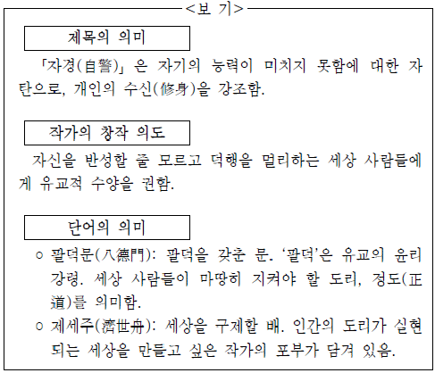
- <제1수>에서 ‘명덕’을 닦는 것은 인간이 지켜야 할 기본적 도리의 실천을 위해 필요한 것이다.
- <제1수>에서 작가는 덕을 실천하지 않는 현실에 대해 안타까워하고 있다.
- <제2수>에서 ‘크나큰 한길’은 덕을 실천하기 위해서 ‘행인’이 만나는 장애물을 의미한다.
- <제3수>에서 ‘행인’을 건너게 하려는 화자를 통해 작가가 지향하는 삶의 태도가 드러난다.
- <제3수>에서 작가는 세상을 구제하고 싶은 포부에 비해 자신의 능력이 부족함을 한탄하고 있다.
(정답률: 알수없음)
26. ⓐ에 드러난 인물의 생각으로 가장 적절한 것은?(37번 공통지문 문제)
- 잃어버린 양심을 되찾아야 한다.
- 농민과 도시 사람 모두에게 책임이 있다.
- 도시 사람들에 비해 농민들이 더 우월하다.
- 장사의 기본 원칙을 지키는 것이 중요하다.
- 도시에 사는 사람들은 경제적 이익을 따진다.
(정답률: 알수없음)
27. <보기>를 참고하여 ㉠~㉤을 이해한 내용으로 적절하지 않은 것은? [3점](37번 공통지문 문제)
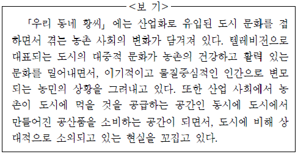
- ㉠ : 농약이 나쁘다는 것을 알면서도 이를 쓰는 농민들의 이기적인 모습을 그리고 있어.
- ㉡ : 농촌으로 들어오는 공산품이 대부분 불량품이라는 말에는 농민이 느끼는 상대적 소외감이 담겨 있어.
- ㉢ : 배울 것 하나 없는 텔레비전이라는 말을 통해, 대중문화에 대한 부정적인 시선이 드러나고 있어.
- ㉣ : 도시 소식은 흉악한 것들이 많다는 말을 통해, 삭막한 도시의 세태를 비판하면서 인정 넘치는 농촌 문화를 긍정하고 있음을 알 수 있어.
- ㉤ : 농민들이 넋 놓고 연속극에 빠져 있는 상황을 통해 도시 문화가 농촌의 건강한 문화를 해치고 있음을 드러내고 있어.
(정답률: 알수없음)
28. <보기>를 참고하여 (가)를 감상한 내용으로 적절하지 않은 것은?(40번 공통지문 문제)
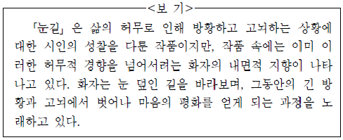
- ㉠: 현재의 시점에서 화자는 지나온 삶을 돌아보고 있군.
- ㉡: 화자는 그동안 긴 방황의 시간들을 겪었겠군.
- ㉢: 화자는 명상을 통해 허무를 느끼고 있군.
- ㉣: 화자는 내적 고뇌에서 벗어나는 새로운 경험을 하게 되었군.
- ㉤: 화자는 내면적 방황을 마치고 고뇌에서 벗어났군.
(정답률: 알수없음)
29. (나)를 다음과 같이 정리한다고 할 때, ⓐ에 들어갈 내용으로 가장 적절한 것은? [3점](40번 공통지문 문제)
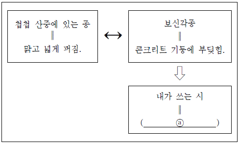
- 제 목소리 대신 다른 목소리를 냄.
- 세상을 향한 외침이 울림을 주지 못함.
- 현실 세계를 긍정적 관점으로 파악함.
- 외부와의 조화를 추구하여 새로운 의미를 발견함.
- 말하고자 한 내용보다 더 많은 의미를 담아 되돌아옴.
(정답률: 알수없음)
30. 윗글을 영화로 만든다고 할 때, 장면에 맞는 촬영 방법과 효과로 적절하지 않은 것은? [3점](43번 공통지문 문제)
- [A]는 ‘엄마’의 얼굴을 클로즈업하여 ‘할머니’에 대한 죄책감, 안타까움 등의 복합적 심정이 담긴 표정을 잘 살렸으면 좋겠어.
- [B]는 애써 웃으려는 ‘엄마’와 슬픔을 참는 ‘정수’의 모습을 번갈아 카메라로 잡아 이별을 앞둔 모자간의 아픈 심리를 드러내면 좋겠어.
- [C]는 ‘정철’에 대한 ‘엄마’의 바람을 내레이션으로 처리하여 ‘정철’이 ‘엄마’의 부재를 담담하게 받아들이도록 유도하는 모습을 보여주면 좋겠어.
- [D]는 가족들의 일상을 스쳐 지나가듯 삽입하여 이별을 받아들이기 힘들어하는 ‘정철’의 심정이 부각되도록 하면 좋겠어.
- [E]는 ‘엄마’와 ‘정철’의 일상적 장면을 연속적으로 이어 붙
(정답률: 알수없음)
31. <보기>를 ‘S# 76’으로 바꿨을 때, 고려했을 내용으로 가장(43번 공통지문 문제)
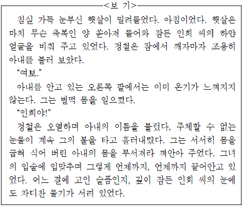
- ‘정철’의 심리와 조응하는 배경으로 교체한다.
- ‘정철’과 ‘인희’가 서로 화해하는 장면을 삽입한다.
- 죽음을 맞는 ‘인희’의 고통을 극대화하여 보여준다.
- 삶에 미련을 갖는 ‘인희’의 모습을 구체적으로 묘사한다.
- ‘인희’를 보내는 ‘정철’의 슬픔을 최대한 절제하여 보여준다.
(정답률: 알수없음)
정답이 "⑤"인 이유는 보기에서 제시된 내용 중에서 가장 중요한 것은 "면접 전에 충분한 조사를 하고 준비하는 것"이라는 것입니다. 면접에서는 자신의 경험과 역량을 잘 어필하는 것도 중요하지만, 그 전에 회사와 산업에 대한 충분한 조사를 하지 않으면 면접에서 제대로 된 대답을 할 수 없습니다. 따라서 "⑤"가 가장 적절한 선택지입니다.